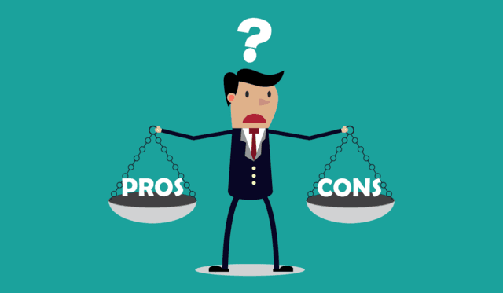

Pros
- High Demand: There is a consistently high demand for skilled computer science professionals across various industries, leading to excellent job prospects.
- Competitive Salaries: Many computer science jobs offer competitive salaries and benefits, especially for individuals with in-demand skills and experience.
- Remote Work Opportunities: The nature of many computer science jobs allows for remote work, providing flexibility and work-life balance.
Cons
- High Stress Levels: Reason: The fast-paced and dynamic nature of the technology industry can lead to high-stress levels. Tight deadlines, demanding projects, and the need to stay updated with rapidly changing technologies can contribute to stress and pressure. ,
Impact: Prolonged periods of stress can lead to burnout, negatively affecting physical and mental well-being. It may also impact the quality of work and job satisfaction.
- Constant Learning Curve: Reason: Technology evolves rapidly, requiring computer science professionals to engage in continuous learning to stay relevant. Learning new languages, frameworks, tools, and methodologies can be time-consuming and challenging.
Impact: The need for continuous learning can lead to feelings of overwhelm, especially for those who find it difficult to keep up with the pace of change. It may also impact work-life balance as professionals invest time in acquiring new skills.
- Long Hours and Work-Life Imbalance: Reason: Meeting project deadlines, addressing critical issues, or handling on-call responsibilities may require long working hours. The demand for timely delivery of projects can lead to imbalances between work and personal life.
Impact: Working long hours regularly can result in fatigue, reduced quality of life, and strained personal relationships. Achieving a healthy work-life balance becomes challenging, affecting overall well-being.